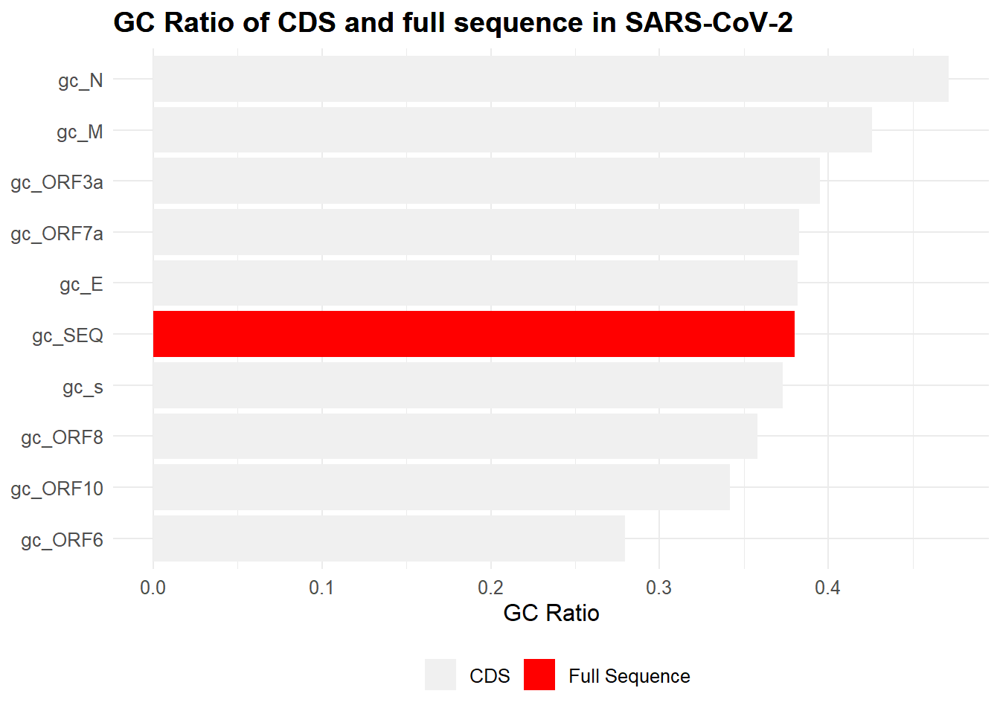
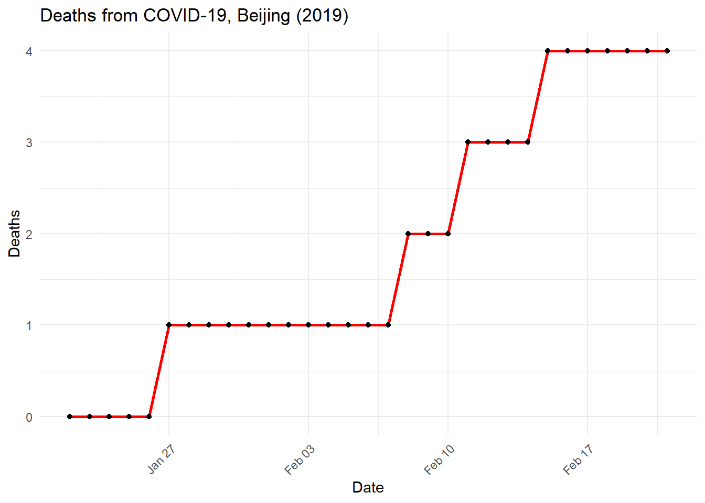
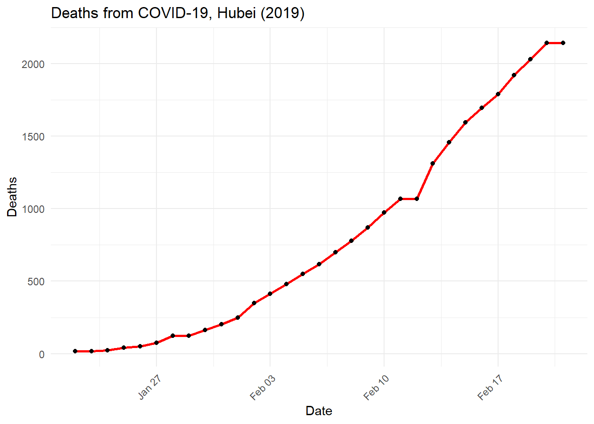
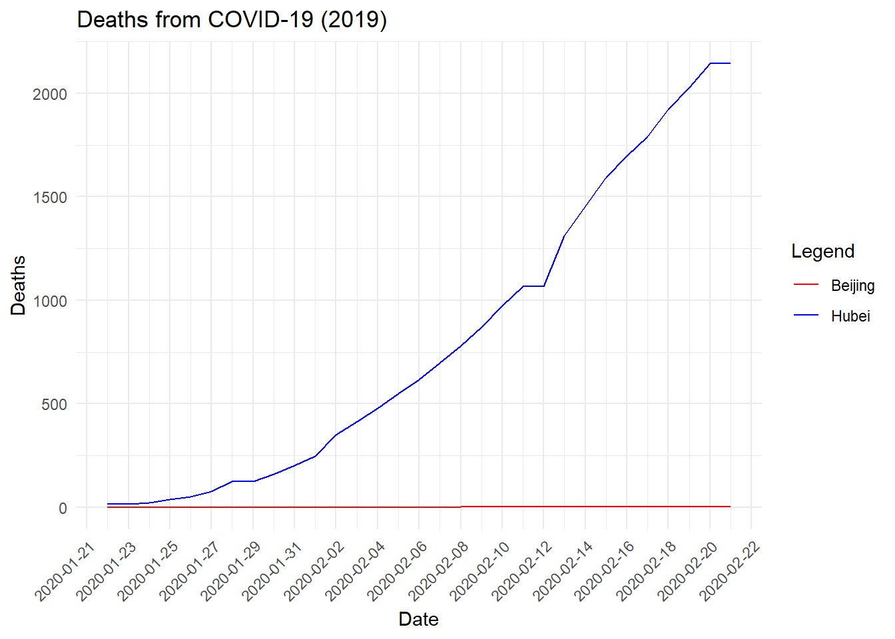
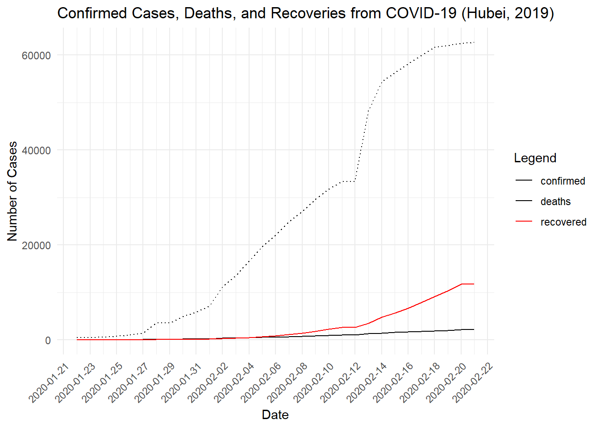

Section 3 COVID-19

Figure 3.1: Credit: CDC
3.1 Background
According to the World Health Organization, the new Coronavirus Disease 19 (COVID-19) “is caused by the virus SARS-CoV-2. The most likely ecological reservoirs for SARS-CoV-2 are bats, but it is believed that the virus jumped the species barrier to humans from another intermediate animal host. This intermediate animal host could be a domestic food animal, a wild animal, or a domesticated wild animal which has not yet been identified.” This virus has a genome composed of RNA.
What is the difference between SARS-CoV-2 and COVID-19?
3.2 Sequence
Did you know that scientists have already obtained several complete genome sequences for SARS-CoV-2? One of the more recent submitted sequences is stored online at the NIH under the GenBank ID number: LC522972.1. The genome sequence is stored in a simple type of file called a FASTA file. Here’s what it looks like!

Wait, why does this look like a DNA sequence and not an RNA sequence?
As reported in this answer, RNA is less stable than DNA and so we can obtain the complimentary DNA (cDNA) for the RNA sequence to preserve and analyze. The sequence we see in GenBank is the cDNA version of the SARS-CoV-2 genomic RNA.
3.3 Learning Resources
3.3.1 WHO
The World Health Organization has published open courses on novel respiratory viruses:
3.3.2 JHU
The Johns Hopkins University Center for Systems Science and Engineering offers a dashboard (Johns Hopkins University 2020) with real-time tracking of COVID-19.
3.3.3 UT
Researchers at the University of Texas (Austin) are working to determine the structure of the SARS-CoV-2 virus.
3.3.4 National Institutes of Health
Researchers around the world are contributing information about the SARS-CoV-2 virus so both the structure and function can be better understood. Sequence data is available at the NIH.
3.4 Sequence Analysis
What would you like to measure regarding COVID-19?
3.4.1 GC Content
One way to examine a DNA sequence is to look at the GC-content proportion of G and C bases relative to the entire sequence. To do this, a scientist would count all of the bases and find the fraction that are G or C. It sounds tedious so a computer program is ideal for this type of task! Let’s use R to calculate the G+C ratio for a sequence of DNA. We can just use the SARS-CoV-2 sequence to test this program. To do the analysis, we can load the Biostrings package into R and use some of the built-in functionality. Tools like Biostrings were written for cases just like this! We can do the basic analysis in a few lines of code. A few more lines of code are required to gather and organize the data for specific gene-encoding regions in the sequence.
Data:
- FASTA LC522972.1 Severe acute respiratory syndrome coronavirus 2
First, we can load the sequence data from a FASTA file.
#load external packages
library(coRdon)
library(Biostrings)
library(tidyverse)
library(knitr)
#===============
#load data
#===============
#read sequence data
#create any variable name you like
dnaSet <- readSet(file="data/sarscov2.fasta")
#extract the dnaString (single sequence) from the dnaStringSet (a list of sequences)
dna<-dnaSet[[1]]Next, we can begin the analysis of GC content by obtaining the frequency of GC in the whole sequence and in specific regions that encode genes.
#===============
#GC Frequencies
#===============
#obtain the G+C frequency using 'letterFrequency'
gc_SEQ<-letterFrequency(dna, letters = "CG", as.prob = TRUE)
#gc for gene S
gene_s<-dna[21560:25381]
gc_s<-letterFrequency(gene_s, letters = "CG", as.prob = TRUE)
#ORF3a
gene_ORF3a<-dna[25390:26217]
gc_ORF3a<-letterFrequency(gene_ORF3a, letters = "CG", as.prob = TRUE)
#E
gene_E<-dna[26242:26469]
gc_E<-letterFrequency(gene_E, letters = "CG", as.prob = TRUE)
#M
gene_M<-dna[26520:27188]
gc_M<-letterFrequency(gene_M, letters = "CG", as.prob = TRUE)
#ORF6
gene_ORF6<-dna[27199:27384]
gc_ORF6<-letterFrequency(gene_ORF6, letters = "CG", as.prob = TRUE)
#ORF7a
gene_ORF7a<-dna[27391:27756]
gc_ORF7a<-letterFrequency(gene_ORF7a, letters = "CG", as.prob = TRUE)
#ORF8
gene_ORF8<-dna[27891:28256]
gc_ORF8<-letterFrequency(gene_ORF8, letters = "CG", as.prob = TRUE)
#N
gene_N<-dna[28271:29530]
gc_N<-letterFrequency(gene_N, letters = "CG", as.prob = TRUE)
#ORF10
gene_ORF10<-dna[29555:29671]
gc_ORF10<-letterFrequency(gene_ORF10, letters = "CG", as.prob = TRUE)Next, we can organize the data to prepare it for visualization.
#===============
#organize data
#===============
#put the frequencies into a "tibble" to organize the data
tbl<-tibble(gc_SEQ,gc_s,gc_ORF3a,gc_E,gc_M,gc_ORF6,gc_ORF7a,gc_ORF8,gc_N,gc_ORF10, .name_repair = "unique")
#transpose the data (rows become columns)
tbl_t<- as.data.frame(t(as.matrix(tbl)))
#name the columns
tbl_t<- rownames_to_column(tbl_t, var = "CDS")
colnames(tbl_t)<-c("CDS", "GC_ratio")
#add a column containing the type of sequence (full or coding region)
tbl_t$seqType<-c("full","cds","cds","cds","cds","cds","cds","cds","cds","cds")
#sort the table by the ratio values
tbl_t<-tbl_t %>% arrange(GC_ratio)
#print a pretty table
kable(tbl_t)| CDS | GC_ratio | seqType |
|---|---|---|
| gc_ORF6 | 0.2795699 | cds |
| gc_ORF10 | 0.3418803 | cds |
| gc_ORF8 | 0.3579235 | cds |
| gc_s | 0.3731031 | cds |
| gc_SEQ | 0.3799451 | full |
| gc_E | 0.3815789 | cds |
| gc_ORF7a | 0.3825137 | cds |
| gc_ORF3a | 0.3949275 | cds |
| gc_M | 0.4260090 | cds |
| gc_N | 0.4714286 | cds |
Now, we can visualize the data to help us understand the GC-content of each portion of the sequence. This is a very basic plot and it needs some improvement!

Let’s ask some questions:
- which gene/sequence has the highest GC ratio?
- what portion of the gene sequences have a gc ratio above 0.35?
What would you do to improve this plot?
Here is an upgraded plot that is more appealing. The ratio for the full sequence is highlighted for comparison to the coding regions. This plot uses a library called ‘ggplot2’ to handle the graphics. (Wickham 2009) You’ll notice the style of this code uses ‘+’ symbols to add features. You can think of it like:
- [main graph] +
- [draw some bars] +
- [make it sideways] +
- [add a title]+
- [change the colors] +
- [more cool stuff].
#ggplot2 graphics
ggplot(data=tbl_t, aes(x=CDS,y=GC_ratio,fill=factor(seqType))) +
geom_bar(position="dodge",stat="identity") +
coord_flip() +
ggtitle("GC Ratio of CDS and full sequence in SARS-CoV-2") +
ylab("GC Ratio")+
scale_fill_manual(values=c("#f0f0f0", "#ff0000"),labels=c("CDS","Full Sequence"))+
theme_minimal() +
scale_x_discrete(
limits=c(tbl_t$CDS),
labels=c(tbl_t$CDS)
) +
theme(
legend.title=element_blank(),
legend.position=c(.1,.9),
axis.title.y=element_blank(),
text=element_text(size=12),
plot.title=element_text(face="bold",hjust=c(0,0))
)+
theme(legend.position="bottom", legend.box = "horizontal")
Let’s AGAIN ask some questions:
- which gene/sequence has the highest GC ratio?
- what portion of the gene sequences have a gc ratio above 0.35?
What are some strengths and weaknesses of this plot?
If you’re interested, the ‘gc_N’ gene (not official name) is described here and here. It is a nucleocapsid phosphoprotein that helps to package the viral genome, among other functions. The original information regarding the coding regions (used to create these visualizations) of the SARS-CoV-2 virus was found here.
3.5 Illness Trends
Let’s now look at some data related to the number of cases of COVID-19 over time (Johns Hopkins CSSE 2020). Our goal will be to produce a line graph of the number of cases versus the date so we can visually examine the growth of COVID-19. Do you think the trend will be linear or non-linear? These data were obtained from a GitHub repository maintained by Johns Hopkins University CSSE and contain data related to confirmed cases, deaths, and recoveries. The data are not the most current so these figures will not be completely accurate!
3.5.1 Confirmed Cases
Let’s examine confirmed cases in Beijing over all dates in the data set.
library(lubridate)
#load the data
confirmed = read.csv("data/confirmed.csv")
#print the first few rows to see what is in the file
head(confirmed)## subregion region lat lon X1.22.2020 X1.23.2020 X1.24.2020
## 1 Anhui Mainland China 31.82571 117.2264 1 9 15
## 2 Beijing Mainland China 40.18238 116.4142 14 22 36
## 3 Chongqing Mainland China 30.05718 107.8740 6 9 27
## 4 Fujian Mainland China 26.07783 117.9895 1 5 10
## 5 Gansu Mainland China 36.06110 103.8343 0 2 2
## 6 Guangdong Mainland China 23.33841 113.4220 26 32 53
## X1.25.2020 X1.26.2020 X1.27.2020 X1.28.2020 X1.29.2020 X1.30.2020 X1.31.2020
## 1 39 60 70 106 152 200 237
## 2 41 68 80 91 111 114 139
## 3 57 75 110 132 147 182 211
## 4 18 35 59 80 84 101 120
## 5 4 7 14 19 24 26 29
## 6 78 111 151 207 277 354 436
## X2.1.2020 X2.2.2020 X2.3.2020 X2.4.2020 X2.5.2020 X2.6.2020 X2.7.2020
## 1 297 340 408 480 530 591 665
## 2 168 191 212 228 253 274 297
## 3 247 300 337 366 389 411 426
## 4 144 159 179 194 205 215 224
## 5 40 51 55 57 62 62 67
## 6 535 632 725 813 895 970 1034
## X2.8.2020 X2.9.2020 X2.10.2020 X2.11.2020 X2.12.2020 X2.13.2020 X2.14.2020
## 1 733 779 830 860 889 910 934
## 2 315 326 337 342 352 366 372
## 3 428 468 486 505 518 529 537
## 4 239 250 261 267 272 279 281
## 5 79 83 83 86 87 90 90
## 6 1095 1131 1159 1177 1219 1241 1261
## X2.15.2020 X2.16.2020 X2.17.2020 X2.18.2020 X2.19.2020 X2.20.2020 X2.21.2020
## 1 950 962 973 982 986 987 988
## 2 375 380 381 387 393 395 396
## 3 544 551 553 555 560 567 572
## 4 285 287 290 292 293 293 293
## 5 90 90 91 91 91 91 91
## 6 1294 1316 1322 1328 1331 1332 1333beijing<-as.data.frame(confirmed[2,5:ncol(confirmed)])
beijing<-as_tibble(cbind(date = names(beijing), t(beijing)))
colnames(beijing)<-c("date", "cases")
head(beijing)## # A tibble: 6 x 2
## date cases
## <chr> <chr>
## 1 X1.22.2020 14
## 2 X1.23.2020 22
## 3 X1.24.2020 36
## 4 X1.25.2020 41
## 5 X1.26.2020 68
## 6 X1.27.2020 80beijing$date<-str_remove(beijing$date, "[X]")
beijing$date<-str_replace_all(beijing$date, "[.]", "-")
head(beijing)## # A tibble: 6 x 2
## date cases
## <chr> <chr>
## 1 1-22-2020 14
## 2 1-23-2020 22
## 3 1-24-2020 36
## 4 1-25-2020 41
## 5 1-26-2020 68
## 6 1-27-2020 80## # A tibble: 6 x 2
## date cases
## <date> <dbl>
## 1 2020-01-22 14
## 2 2020-01-23 22
## 3 2020-01-24 36
## 4 2020-01-25 41
## 5 2020-01-26 68
## 6 2020-01-27 80# Basic line plot
ggplot(data = beijing, aes(x = date, y=cases))+
geom_line(color = "#ff0000", size = 1)+
geom_point()+
theme_minimal()+
xlab("Date")+
ylab("Confirmed Cases")+
ggtitle("Confirmed Cases of COVID-19, Beijing (2019)")+
theme(axis.text.x = element_text(angle = 45, hjust = 1))
3.5.2 Deaths
Let’s examine the number of reported deaths in Beijing.
library(lubridate)
#load the data
deaths = read.csv("data/deaths.csv")
beijing_deaths<-as.data.frame(deaths[2,5:ncol(deaths)])
beijing_deaths<-as_tibble(cbind(date = names(beijing_deaths), t(beijing_deaths)))
colnames(beijing_deaths)<-c("date", "cases")
beijing_deaths$date<-str_remove(beijing_deaths$date, "[X]")
beijing_deaths$date<-str_replace_all(beijing_deaths$date, "[.]", "-")
beijing_deaths$date <- mdy(beijing_deaths$date)
beijing_deaths$cases <- as.numeric(beijing_deaths$cases)
head(beijing_deaths)## # A tibble: 6 x 2
## date cases
## <date> <dbl>
## 1 2020-01-22 0
## 2 2020-01-23 0
## 3 2020-01-24 0
## 4 2020-01-25 0
## 5 2020-01-26 0
## 6 2020-01-27 1# Basic line plot
ggplot(data = beijing_deaths, aes(x = date, y=cases))+
geom_line(color = "#ff0000", size = 1)+
geom_point()+
theme_minimal()+
xlab("Date")+
ylab("Deaths")+
ggtitle("Deaths from COVID-19, Beijing (2019)")+
theme(axis.text.x = element_text(angle = 45, hjust = 1))
What patterns do you see?
How can we interpret the flat regions of this line?
Do you notice any increase in slope over time? That is, did the overall rate of deaths increase?
Let’s now examine the number of reported deaths in Hubei.
library(lubridate)
#load the data
deaths = read.csv("data/deaths.csv")
#print the first few rows to see what is in the file
head(deaths)## subregion region lat lon X1.22.2020 X1.23.2020 X1.24.2020
## 1 Anhui Mainland China 31.82571 117.2264 0 0 0
## 2 Beijing Mainland China 40.18238 116.4142 0 0 0
## 3 Chongqing Mainland China 30.05718 107.8740 0 0 0
## 4 Fujian Mainland China 26.07783 117.9895 0 0 0
## 5 Gansu Mainland China 36.06110 103.8343 0 0 0
## 6 Guangdong Mainland China 23.33841 113.4220 0 0 0
## X1.25.2020 X1.26.2020 X1.27.2020 X1.28.2020 X1.29.2020 X1.30.2020 X1.31.2020
## 1 0 0 0 0 0 0 0
## 2 0 0 1 1 1 1 1
## 3 0 0 0 0 0 0 0
## 4 0 0 0 0 0 0 0
## 5 0 0 0 0 0 0 0
## 6 0 0 0 0 0 0 0
## X2.1.2020 X2.2.2020 X2.3.2020 X2.4.2020 X2.5.2020 X2.6.2020 X2.7.2020
## 1 0 0 0 0 0 0 0
## 2 1 1 1 1 1 1 1
## 3 1 2 2 2 2 2 2
## 4 0 0 0 0 0 0 0
## 5 0 0 0 0 0 0 0
## 6 0 0 0 0 0 0 1
## X2.8.2020 X2.9.2020 X2.10.2020 X2.11.2020 X2.12.2020 X2.13.2020 X2.14.2020
## 1 0 1 3 4 4 5 6
## 2 2 2 2 3 3 3 3
## 3 2 2 2 3 3 4 5
## 4 0 0 0 0 0 0 0
## 5 1 2 2 2 2 2 2
## 6 1 1 1 1 1 2 2
## X2.15.2020 X2.16.2020 X2.17.2020 X2.18.2020 X2.19.2020 X2.20.2020 X2.21.2020
## 1 6 6 6 6 6 6 6
## 2 4 4 4 4 4 4 4
## 3 5 5 5 5 5 6 6
## 4 0 0 0 0 0 1 1
## 5 2 2 2 2 2 2 2
## 6 2 2 4 4 5 5 5hubei<-as.data.frame(deaths[13,5:ncol(deaths)])
hubei<-as_tibble(cbind(date = names(hubei), t(hubei)))
colnames(hubei)<-c("date", "cases")
head(hubei)## # A tibble: 6 x 2
## date cases
## <chr> <chr>
## 1 X1.22.2020 17
## 2 X1.23.2020 17
## 3 X1.24.2020 24
## 4 X1.25.2020 40
## 5 X1.26.2020 52
## 6 X1.27.2020 76hubei$date<-str_remove(hubei$date, "[X]")
hubei$date<-str_replace_all(hubei$date, "[.]", "-")
head(hubei)## # A tibble: 6 x 2
## date cases
## <chr> <chr>
## 1 1-22-2020 17
## 2 1-23-2020 17
## 3 1-24-2020 24
## 4 1-25-2020 40
## 5 1-26-2020 52
## 6 1-27-2020 76## # A tibble: 6 x 2
## date cases
## <date> <dbl>
## 1 2020-01-22 17
## 2 2020-01-23 17
## 3 2020-01-24 24
## 4 2020-01-25 40
## 5 2020-01-26 52
## 6 2020-01-27 76#line plot
ggplot(data = hubei, aes(x = date, y=cases))+
geom_line(color = "#ff0000", size = 1)+
geom_point()+
theme_minimal()+
xlab("Date")+
ylab("Deaths")+
ggtitle("Deaths from COVID-19, Hubei (2019)")+
theme(axis.text.x = element_text(angle = 45, hjust = 1))
What patterns do you see?
How can we interpret the flat regions of this line?
Do you notice any increase in slope over time? That is, did the overall rate of deaths increase?
It may be useful to compare Beijing and Hubei with regard to the statistics about deaths from COVID-19. To visualize this, we will modify our data organization and visualization method slightly.
beijing_deaths<-as.data.frame(deaths[2,5:ncol(deaths)])
beijing_deaths<-as_tibble(cbind(date = names(beijing_deaths), t(beijing_deaths)))
colnames(beijing_deaths)<-c("date", "cases")
beijing_deaths$date<-str_remove(beijing_deaths$date, "[X]")
beijing_deaths$date<-str_replace_all(beijing_deaths$date, "[.]", "-")
beijing_deaths$date <- mdy(beijing_deaths$date)
beijing_deaths$cases <- as.numeric(beijing_deaths$cases)
head(beijing_deaths)## # A tibble: 6 x 2
## date cases
## <date> <dbl>
## 1 2020-01-22 0
## 2 2020-01-23 0
## 3 2020-01-24 0
## 4 2020-01-25 0
## 5 2020-01-26 0
## 6 2020-01-27 1joinedData<-left_join(hubei, beijing_deaths, by="date")
colnames(joinedData)<-c("date", "deaths_H", "deaths_B")
#line plot
colors <- c("Hubei" = "blue", "Beijing" = "red")
ggplot(joinedData, aes(x=date)) +
geom_line(aes(y = deaths_H, color="Hubei")) +
geom_line(aes(y = deaths_B, color="Beijing")) +
theme_minimal()+
labs(x = "Date",
y = "Deaths",
color = "Legend") +
ggtitle("Deaths from COVID-19 (2019)")+
theme(axis.text.x = element_text(angle = 45, hjust = 1))+
scale_x_date(date_breaks = "2 days", date_labels = "%F")+
scale_color_manual(values = colors)
What can you learn from this comparison?
When is it useful to view information in context versus by itself?
3.5.3 Recovered
We could simply examine the number of recoveries but perhaps it would be interesting to tell a more complete story for one region of significant importance: Hubei.
#load the confirmed data
confirmed = read.csv("data/confirmed.csv")
hubei_confirmed<-as.data.frame(confirmed[13,5:ncol(confirmed)])
hubei_confirmed<-as_tibble(cbind(date = names(hubei_confirmed), t(hubei_confirmed)))
head(hubei_confirmed)## # A tibble: 6 x 2
## date `13`
## <chr> <chr>
## 1 X1.22.2020 444
## 2 X1.23.2020 444
## 3 X1.24.2020 549
## 4 X1.25.2020 761
## 5 X1.26.2020 1058
## 6 X1.27.2020 1423colnames(hubei_confirmed)<-c("date", "confirmed")
hubei_confirmed$date<-str_remove(hubei_confirmed$date, "[X]")
hubei_confirmed$date<-str_replace_all(hubei_confirmed$date, "[.]", "-")
head(hubei_confirmed)## # A tibble: 6 x 2
## date confirmed
## <chr> <chr>
## 1 1-22-2020 444
## 2 1-23-2020 444
## 3 1-24-2020 549
## 4 1-25-2020 761
## 5 1-26-2020 1058
## 6 1-27-2020 1423hubei_confirmed$date <- mdy(hubei_confirmed$date)
hubei_confirmed$confirmed <- as.numeric(hubei_confirmed$confirmed)
head(hubei_confirmed)## # A tibble: 6 x 2
## date confirmed
## <date> <dbl>
## 1 2020-01-22 444
## 2 2020-01-23 444
## 3 2020-01-24 549
## 4 2020-01-25 761
## 5 2020-01-26 1058
## 6 2020-01-27 1423#load the deaths data
deaths = read.csv("data/deaths.csv")
hubei_deaths<-as.data.frame(deaths[13,5:ncol(deaths)])
hubei_deaths<-as_tibble(cbind(date = names(hubei_deaths), t(hubei_deaths)))
colnames(hubei_deaths)<-c("date", "deaths")
hubei_deaths$date<-str_remove(hubei_deaths$date, "[X]")
hubei_deaths$date<-str_replace_all(hubei_deaths$date, "[.]", "-")
hubei_deaths$date <- mdy(hubei_deaths$date)
hubei_deaths$deaths <- as.numeric(hubei_deaths$deaths)
head(hubei_deaths)## # A tibble: 6 x 2
## date deaths
## <date> <dbl>
## 1 2020-01-22 17
## 2 2020-01-23 17
## 3 2020-01-24 24
## 4 2020-01-25 40
## 5 2020-01-26 52
## 6 2020-01-27 76#load the recovered data
recovered = read.csv("data/recovered.csv")
hubei_recovered<-as.data.frame(recovered[13,5:ncol(recovered)])
hubei_recovered<-as_tibble(cbind(date = names(hubei_recovered), t(hubei_recovered)))
colnames(hubei_recovered)<-c("date", "recovered")
hubei_recovered$date<-str_remove(hubei_recovered$date, "[X]")
hubei_recovered$date<-str_replace_all(hubei_recovered$date, "[.]", "-")
hubei_recovered$date <- mdy(hubei_recovered$date)
hubei_recovered$recovered <- as.numeric(hubei_recovered$recovered)
joinedHubei<-hubei_confirmed %>%
left_join(hubei_deaths, by="date")%>%
left_join(hubei_recovered, by="date")
head(joinedHubei)## # A tibble: 6 x 4
## date confirmed deaths recovered
## <date> <dbl> <dbl> <dbl>
## 1 2020-01-22 444 17 28
## 2 2020-01-23 444 17 28
## 3 2020-01-24 549 24 31
## 4 2020-01-25 761 40 32
## 5 2020-01-26 1058 52 42
## 6 2020-01-27 1423 76 45#line plot
colors <- c("confirmed" = "#000000", "deaths" = "#000000", "recovered" = "#ff0000")
ggplot(joinedHubei, aes(x=date)) +
geom_line(aes(y = confirmed, color="confirmed"), linetype="dotted") +
geom_line(aes(y = deaths, color="deaths" ), linetype="solid") +
geom_line(aes(y = recovered, color="recovered"), linetype="solid") +
theme_minimal()+
labs(x = "Date",
y = "Number of Cases",
color = "Legend") +
ggtitle("Confirmed Cases, Deaths, and Recoveries from COVID-19 (Hubei, 2019)")+
theme(axis.text.x = element_text(angle = 45, hjust = 1))+
scale_x_date(date_breaks = "2 days", date_labels = "%F")+
scale_color_manual(values = colors)
What story does this line plot tell us. Take a minute or two and think about how you might present two different stories to an audience who wants to know more about what is happening with COVID-19 in Hubei.
Guiding questions:
- How do outcomes differ in early January?
- How do the rates of deaths and recoveries differ?
- What happens to confirmed cases versus deaths?
- What trend do you see near the later dates for recoveries and confirmed cases?
3.6 Illness by Province
TBD choropleth map using R
References
Johns Hopkins CSSE. 2020. “2019 Novel Coronavirus COVID-19 (2019-nCoV) Data Repository.” https://github.com/CSSEGISandData/COVID-19.
Johns Hopkins University. 2020. “Center for Systems Science and Engineering.” https://systems.jhu.edu/.
Wickham, Hadley. 2009. Ggplot2: Elegant Graphics for Data Analysis. Springer-Verlag New York. http://ggplot2.org.